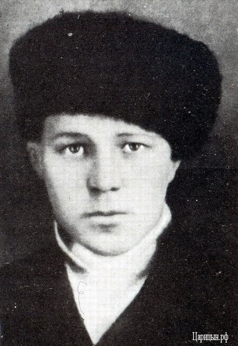

23 декабря 1942 года
Источник: Волгоградская правда от 23 декабря 1982 года.
ОТ СОВЕТСКОГО ИНФОРМБЮРО
Вечернее сообщение 23 декабря.
В заводском районе Сталинграда наши подразделения, преодолевая упорное сопротивление немцев, продвинулись вперед и выбили противника из 24 дзотов и ряда домов.
Северо-западнее Сталинграда наши войска укрепляли свои позиции и вели разведку. На одном участке группа наших разведчиков заняла пять немецких окопов и истребила несколько десятков гитлеровцев. Нашей авиацией было уничтожено на аэродроме 7 транспортных самолетов противника.
Юго-западнее Сталинграда продолжались ожесточенные бои. Немцы продолжают подтягивать и вводить в бой новые силы танков и пехоты, но им не удалось сломить сопротивление с советских бойцов. Наоборот, в течение дня противник был выбит из двух населенных пунктов.
На Котельниковском направлении за день противник предпринял две крупные атаки: одну на Васильевку и другую на Бирзовой. Противник хотя и овладел этими пунктами, но контратаками наших резервов его дальнейшее продвижение было остановлено. Прорвать наш фронт враг не смог. С этого дня бои противника на котельниковском направлении носили оборонительный характер.
23 декабря Ф. Паулюс дал распоряжение генералу Г. Готу об отводе армейской группы «Гот» на прежние рубежи. Это решение не только ставило немецко-фашистские войска перед фактом провала операции деблокады окруженной группировки, но и значительно больше. Генерал-полковник Ф. Паулюс записал в те дни: «Для каждого самого последнего обозного солдата стало очевидно, что Сталинградская битва проиграна».
23 декабря генерал Гот вынужден был признать, что без подхода свежих сил операцию продолжать невозможно. А где было взять свежие силы, когда Манштейн вынужден был отнять у Гота 6-ю танковую дивизию, чтобы как-то задержать стремительное наступление наших войск на Дону.
В стане врага.
А. Крюге «Описание одной битвы»
Двенадцатый день операции по деблокированию. Прощание с войсками, подошедшими к району Васильевки. 6-я танковая дивизия должна покинуть деблокирующие войска. Открытому северному флангу начали угрожать русские войска, находящиеся в данный момент уже полпути к Ростову.
Вернувшись с передовой на КП фронта, командарм Родион Яковлевич Малиновский сказал:
- Сегодня мы окончательно остановили противника. Теперь сами перейдем в наступление.
… Ночь перед наступлением… Какое напряжение ума, воли, нервов испытывают в это время те, по чьему приказу поднимаются из окопов и бросаются на врага солдаты. Мысли роятся в голове: точно ли вскрыта огневая система, все ли решающие силы противника будут накрыты ударами артиллерии и авиации, достаточно ли подвезено горючего, снарядов, правильно ли поняты задачи в войсках и доведены ли они до каждого бойца, восстановлены ли дороги и мосты, налажено ли питание воинов… Необходимо в последний раз взвесить и оценить все детали фронтового бытия, чтобы самому увериться: наступление подготовлено полностью и завершится победой. Только тогда можно подать сигнал в атаку.
Вот такую ночь переживало и командование 2-й гвардейской армии с 23 на 24 декабря 1942 года… Как сейчас помню волевое, огрубевшее на степном ветру, будто высеченное из камня, лицо командира, Р.Я. Малиновского, склонившегося над испещренной пометками картой…
Сотни раз до этого произносили мы названия населенных пунктов – Черноморов, Громославка, Ивановка… Сотни раз прослеживали по карте голубые изгибы рек Мышкова, Аксай… Но теперь все эти названия, как бы обретали материальную силу, и мысли каждого переносились то в траншеи наших войск, где, наверное, вот так же бодрствуют солдаты, то туда, на противоположный берег Мышкова, занятый врагом. Смять противника, развить наступление в глубине и в итоге захватить крупный железнодорожный узел и город Котельниково, лишив врага оперативного маневра, - все это должно начаться через несколько часов…»
Источник: Волгоградская правда от 23 декабря 1982 года.
В этот день в заводском районе Сталинграда наши подразделения, преодолевая упорное сопротивление немцев, продвинулись вперед и выбили противника из 24 дзотов и ряда домов.
Подвиг Саши Филиппова

23 декабря стало известно, что на Дар-горе фашисты повесили трех наших бесстрашных комсомольцев-партизан. Среди них – Саша Филиппов. Ему только исполнилось 16 лет. Саша работал сапожником в артели имени Шаумяна, затем поступил учеником слесаря на завод «Красный Октябрь». Когда развернулись бои, за Сталинград, юноша-патриот стал разведчиком в группе лейтенанта Семехина. Его послали в районы города, занятые фашистами. Днем он работал сапожником, а ночью бесстрашно ходил на явки. Немало живой силы и техники врага было уничтожено в результате разведывательных донесений Саши Филиппова…
Он дрался до последнего часа. Даже у виселицы ударил фашиста и пытался бежать. Но конвойные его догнали, прикололи штыками, а затем повесили…
Последними словами были: «Все равно наши придут и перебьют вас как бешеных собак».
В эти дни «Сталинградская правда сообщает»: Фашисты разрушили школу в селе Плодовитое. Сожгли оборудование физического и химического кабинетов, библиотеку. Так же гитлеровцы поступили с начальной школой, колхозным клубом, правлением колхоза, детскими яслями и многими другими общественными зданиями. Но не одними разрушениями ознаменовался приход немцев. Они все забрали у местных жителей: коров, овец, свиней, кур. Те, кто пытался протестовать, получили пулю. Колхозницу Марию Игнатову расстреляли за то, что она не хотела отдать врагу свой хлеб. Но недолго пришлось хозяйничать захватчикам. За свершенные злодеяния враг поплатился сотнями трупов своих солдат и офицеров.